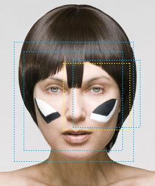
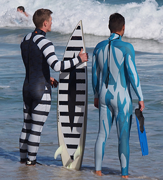

In the military in the early part of the 20th century, they experimented with Dazzle Camouflage. This is where you paint objects wild colors, which seems counter intuitive. When we begin to look at dazzle camouflage in a larger picture it makes sense.
We are probably most aware of this style with Zebras. They are black and white striped and by themselves it seem a silly camouflage. Nothing in their natural habit is black and white striped, so they are not blending in with anything in the background. They instead took a different approach to hiding and try to blend in with their fellow zebras. In turn, this means it is very hard for their predators to select a single zebra and attack it. What they think is a leg belonging to one zebra might turn out to actually belong to a different zebra heading the opposite direction. This mis-match of expectations and reality can also help the zebra to live another day.

A similar approach was employed for ships. Painting them crazy colors would have a similar affect as the zebras. When travelling as a convoy, it was difficult to know the start and end of any given ship. When U-boats, the ship’s predators, would fire a torpedo they were never certain if they were aiming at the middle of one ship or the start/end of another. Sometimes the paint on the ships made it look as if they were going faster, slower or even backwards in the water.
All these techniques were employed to trick the predators. Since it is near impossible to actually hide a tall ship on a flat horizon, dazzle was the next best attempt.
Dazzle camouflage goes even further to facial make-up to disguise yourself from facial recognition cameras. CV Dazzle is an interesting look at what it takes to confuse computer vision algorithms.
If you are interesting in learning more there is a great program all about the history of Dazzle Camouflage on 99% invisible podcast. Which I highly recommend subscribing too!
Most recently, there has been some progress in the creation of a wetsuit to help evade or deter shark attacks. When seeing it, I immediately thought about Dazzle Camouflage.
The company, Shark Attack Mitigation System (SAMS) is developing and testing a series of suits and boards which attempt to make the divers less visible compared to the background waves, surf and sky.
More testing is needed to determine the effectiveness, but it is still an interesting concept that often the opposite maybe more helpful. Much the the more garish and attention grabbing shapes of zebra stripes of Dazzle Camouflage, they might save your life.